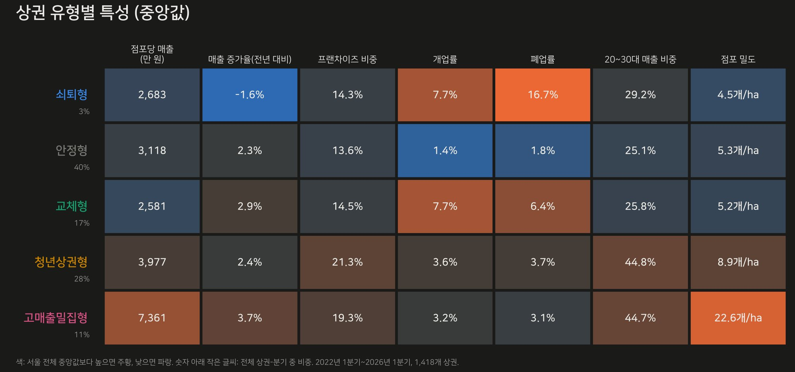
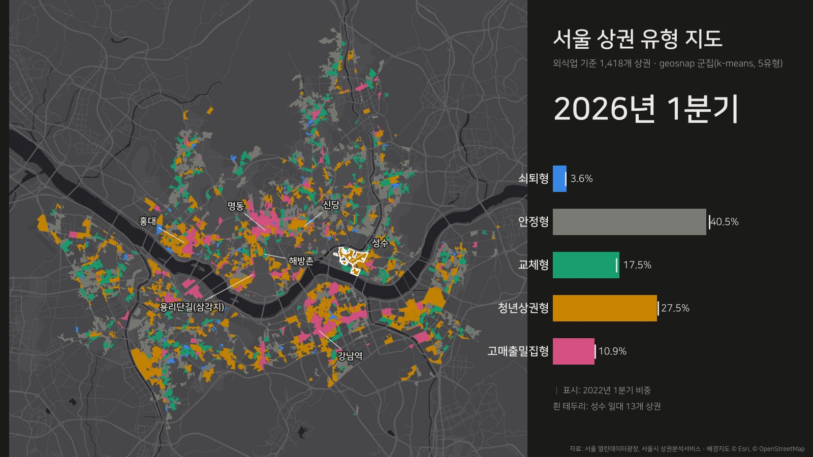
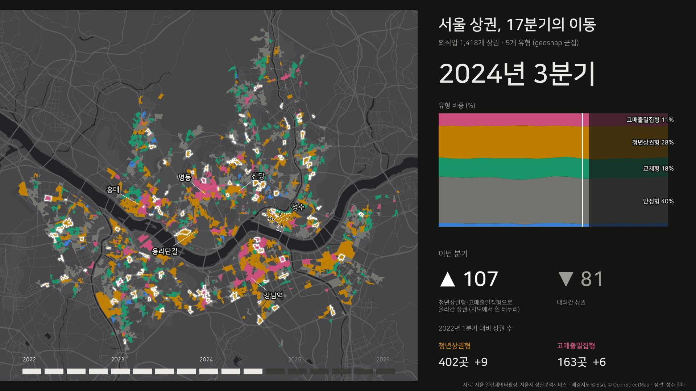
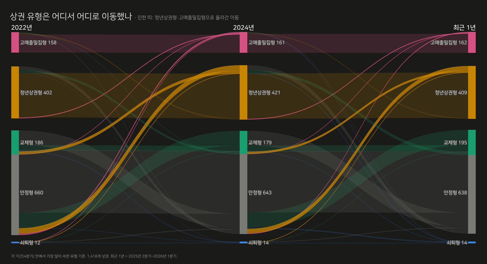
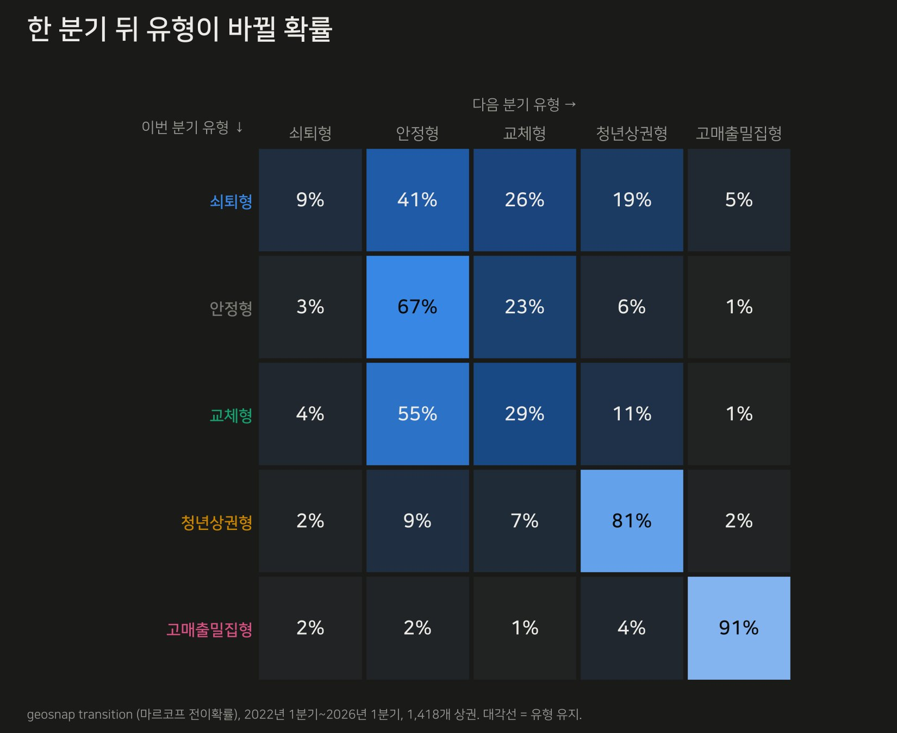
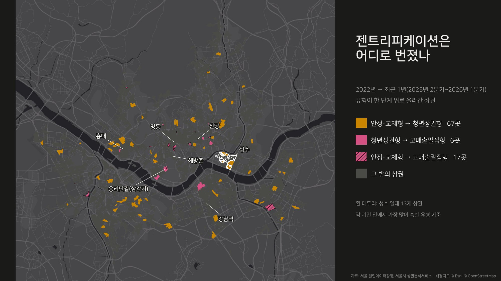
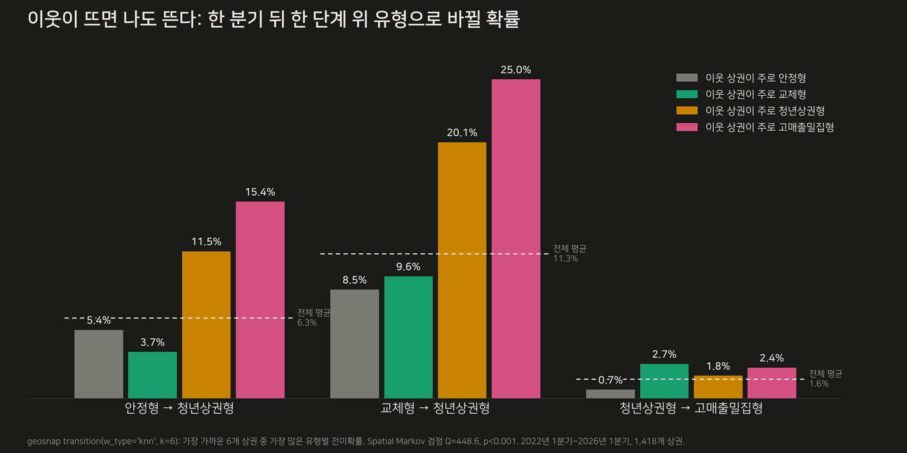
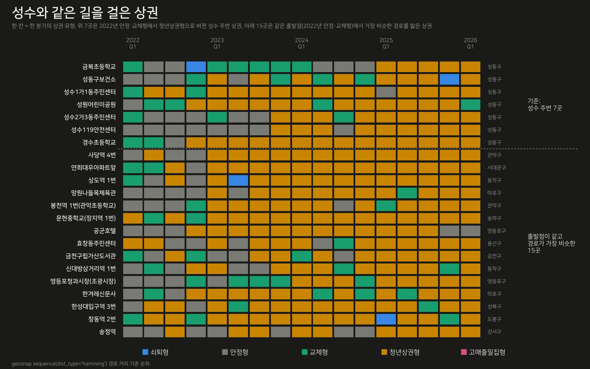
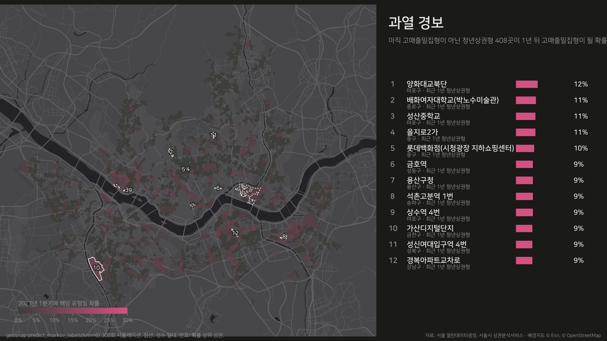
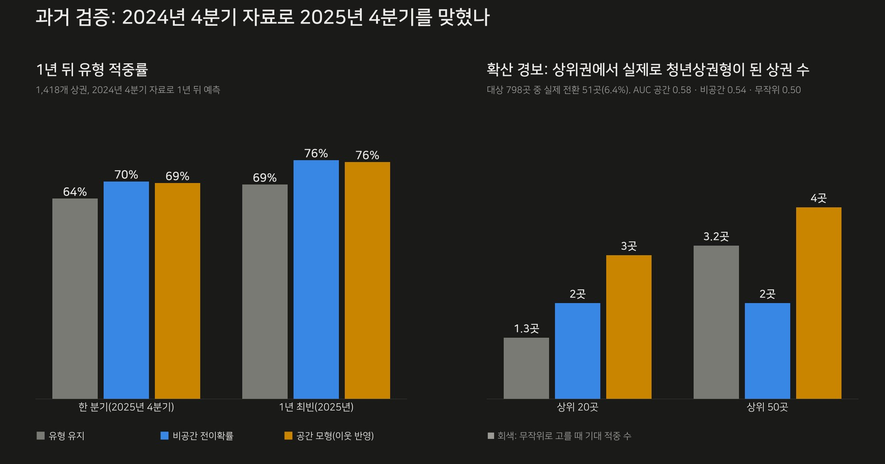

분석 개요무엇을, 왜 분석했나
목적. 성수동처럼 상권이 갑자기 바뀌는 곳을 미리 찾아내는 조기경보를 만드는 것. 세 가지를 물었다. 서울 상권은 몇 가지 유형으로 나뉘고 어떻게 옮겨 다니나(RQ1), 다음에 바뀔 상권은 어디인가(RQ2), 성수와 같은 길을 걷는 상권은 어디인가(RQ3).
| 항목 | 내용 |
|---|---|
| 자료 | 서울 열린데이터광장 서울시 상권분석서비스(점포·추정매출·영역). 외식업 10개 업종, 2022년 1분기~2026년 1분기 17분기 |
| 유형 변수 | 점포당 매출, 전년 대비 매출 증가율, 프랜차이즈 비중, 개업률, 폐업률, 20~30대 매출 비중, 점포 밀도 |
| 분석 도구 | 공개 패키지 geosnap 0.17의 함수를 그대로 사용: 유형화(k-means), 전이확률(공간 마르코프), 경로 군집, 예측 시뮬레이션. 자료 수집·전처리는 공개 저장소 seoul_commerce |
| 검증 | 2024년 4분기까지 자료로 2025년 4분기를 예측해 실제와 비교 |
결과 1 · RQ1서울 상권은 다섯 유형으로 나뉜다
가장 많은 것은 개업도 폐업도 적은 안정형(40%). 20~30대 매출이 45%에 이르는 청년상권형(28%)에 성수동카페거리·성수역이 속한다. 점포당 매출이 가장 높은 고매출밀집형(11%)은 강남역·명동·대형 시장 같은 중심가다.



애니메이션: 서울 상권, 17분기의 이동
분기마다 한 단계 올라간 상권이 흰 테두리로 빛나고, 유형 비중 그래프와 이동 수가 함께 움직인다.
결과 2 · RQ1대부분은 제자리, 일부가 계단을 오른다
한 분기 뒤 같은 유형으로 남을 확률은 고매출밀집형 91%, 청년상권형 81%, 안정형 67%다. 분기마다 약 80곳이 한 단계 올라가고 비슷한 수가 내려오지만, 각 기간에 가장 많이 속한 유형으로 보면 흐름이 드러난다.


결과 3 · RQ1젠트리피케이션은 두 계단으로 번졌다
1단계 확산(67곳): 안정·교체형 → 청년상권형. 성수 주변 골목 7곳, 망원, 효창동, 성신여대·한성대입구, 상도·봉천, 석촌고분. 2단계 과열(6곳): 청년상권형 → 고매출밀집형. 삼각지·한강로동(용리단길), 황학동(신당 인근), 홍대, 신사역, 행당시장. 처음 설계에서 지목한 성수·용리단길·신당이 모두 이 흐름에 잡혔다.

결과 4이웃이 뜨면 나도 뜬다
가장 가까운 6개 상권의 유형에 따라 전이확률이 뚜렷하게 달라졌다(공간 마르코프 검정 Q=448.6, p<0.001). 안정형이 청년상권형이 될 확률은 평균 6.3%인데, 이웃이 주로 청년상권형이면 11.5%, 고매출밀집형이면 15.4%다. 교체형은 25%까지 오른다.

결과 5 · RQ3성수와 같은 길을 걸은 상권
2022년 안정·교체형에서 청년상권형으로 옮긴 성수 주변 7곳의 분기별 경로를 기준으로, 출발점이 같은 상권 중 경로가 가장 비슷한 곳을 찾았다(geosnap 경로 거리). 상위 25곳 중 22곳이 실제로 청년상권형이 됐다. 사당역 4번, 연희대우아파트앞, 상도역 1번, 망원나들목, 봉천역 1번, 효창동주민센터, 한성대입구역 3번 등이다.

결과 6 · RQ22027년 1분기까지의 조기경보
geosnap 예측 함수(이웃 효과 포함)를 300번 돌려 1년 뒤 유형 확률을 냈다. 확산 경보 상위권은 성수 서쪽(상왕십리·왕십리·성원중·무학봉)과 종로·중구(인사동, 동대문역, 남산골공원옆)에 몰린다. 과열 경보는 전반적으로 낮다(최대 12%).
| 순위 | 확산 경보 (→ 청년상권형) | 확률 | 과열 경보 (→ 고매출밀집형) | 확률 |
|---|---|---|---|---|
| 1 | 상왕십리역 6번 (성동구) | 48% | 양화대교북단 (마포구) | 12% |
| 2 | 서울시인재개발원 (서초구) | 43% | 배화여자대학교·서촌 (종로구) | 11% |
| 3 | 인사동 (종로구) | 43% | 성산중학교 (마포구) | 11% |
| 4 | 본동인정시장 (동작구) | 41% | 을지로2가 (중구) | 11% |
| 5 | 마포농수산물시장 (마포구) | 39% | 롯데백화점·시청광장 (중구) | 10% |
| 6 | 남산골공원옆 (중구) | 39% | 금호역 (성동구) | 9% |
| 7 | 왕십리역 9번 (성동구) | 38% | 용산구청 (용산구) | 9% |

확률 값보다 순위로 읽는 것이 맞다. 분기 유형이 출렁여 거의 모든 상권이 10% 이상으로 나온다. 2026년 1분기에 이미 청년상권형이 된 22곳(남부터미널역 1번, 이수역 5번, 당산역 8번 등)은 "이미 시작된 곳"이라 경보에서 뺐다.
결과 7과거 검증: "그대로 유지"보다는 낫지만 경보는 약하다
2024년 4분기까지의 자료만으로 1년 뒤를 예측했다. 유형 적중률은 "유형 유지" 64%보다 높은 69%였다(1년 최빈 유형 기준 69% → 76%). 그러나 이웃을 고려하지 않은 모형도 같은 수준이었다. 확산 경보는 상위 20곳 중 3곳이 실제로 청년상권형이 돼 무작위(1.3곳)의 2.3배였지만, 상위 50곳에서는 4곳 대 3.2곳으로 차이가 작다(AUC 0.58). 과열 경보는 사례가 9곳뿐이라 사실상 맞히지 못했다. 용리단길·황학동은 2025년 실제로 고매출밀집형이 됐지만 경보 확률은 5~6%였다.

해석할 때한계
- 짧은 기간. 추정매출 자료가 2021년부터라 17분기만 분석했다. 분기 개·폐업률이 출렁여 유형이 자주 바뀐다.
- 유형 경계가 흐리다. 군집 품질 지표(실루엣 0.14)가 낮다. 상권 특성이 연속적으로 변하기 때문이다.
- 외식업만. 전 업종으로 넓히면 결과가 달라질 수 있다. 집객시설 자료는 받지 못했다(분석 변수에는 영향 없음).
- 예측은 현재 유형과 이웃만 본다. 임대료·유동인구 추세 같은 정보는 들어가지 않는다. 경보는 "어디를 먼저 들여다볼지" 정하는 용도로 쓰는 것이 맞다.
- "과열형"은 따로 나오지 않았다. 가장 뜨거운 유형은 이미 자리 잡은 중심가(고매출밀집형)다.